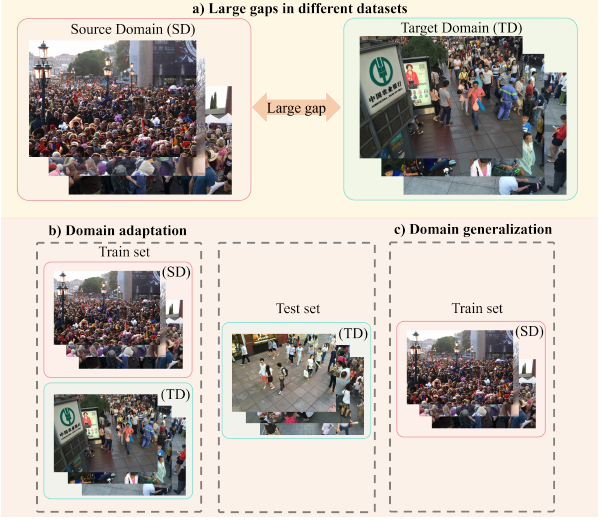
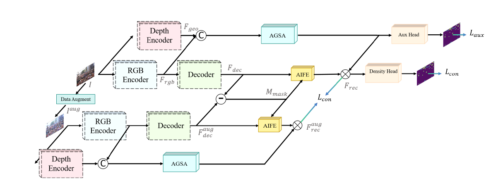
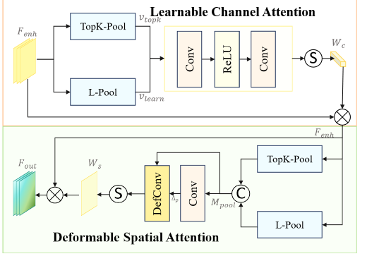
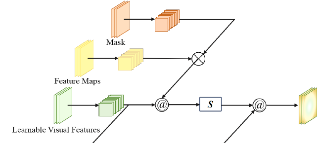

①
Geometry-appearance decoupling
Models domain shift as orthogonal geometric and appearance dimensions rather than a single feature-level discrepancy.
DCCNet improves cross-domain transfer by anchoring crowd counting on geometric priors while filtering out appearance style noise.

Crowd counting models often fail when moved to unseen camera views or visual styles. DCCNet treats the domain gap as two separable factors: geometry and appearance.
DCCNet explicitly decouples geometric structure from visual appearance for cross-domain crowd counting. The framework uses DepthAnything as a frozen depth-prior provider, aligns RGB and geometry with AGSA, and reconstructs appearance-invariant representations with AIFE. At inference, the second augmented-view consistency path is removed while the learned geometry-guided foreground gate remains internal to density prediction.
Models domain shift as orthogonal geometric and appearance dimensions rather than a single feature-level discrepancy.
Injects robust zero-shot depth priors and uses adaptive alignment to handle perspective and scale changes.
Uses a dual-stream consistency strategy and style-invariant prototypes to reduce photometric style noise.
The network combines an RGB stream, a geometry stream, AGSA alignment, AIFE feature enhancement, and density prediction.


AGSA calibrates RGB features using depth-guided structural cues. Learnable channel selection preserves salient density peaks, while deformable spatial attention corrects modality misalignment.

AIFE reconstructs features using shared prototypes optimized for canonical crowd patterns, reducing domain-specific texture, weather, and illumination effects.
Lden = MSE(Y_hat, Y)
Laux = BCE(Paux, Ybin)
Lcon = ||Frec - Frec_aug||²
DCCNet is evaluated under standard train-on-source, test-on-target protocols across ShanghaiTech Part A/B, UCF-QNRF, and JHU-CROWD++.
| Source → Target | Best prior MAE | DCCNet MAE | Best prior MSE | DCCNet MSE |
|---|---|---|---|---|
| A → B | 11.0 | 9.6 | 19.3 | 17.0 |
| A → Q | 105.3 | 108.5 | 191.1 | 184.5 |
| B → A | 97.6 | 89.0 | 170.2 | 159.5 |
| B → Q | 165.6 | 162.3 | 290.4 | 290.9 |
| Q → A | 64.2 | 66.3 | 101.1 | 113.1 |
| Q → B | 10.7 | 10.8 | 18.5 | 18.5 |
Lower is better. The paper reports that DCCNet achieves superior performance in 10 out of 12 main metrics; a few settings remain competitive rather than strictly best.
DCCNet reduces MAE from the strongest prior 11.0 to 9.6, showing the benefit of explicit geometry-aware alignment.
For STR → STA, DCCNet reports 29.8 MAE and 63.4 MSE, outperforming MPCount and DAOT in challenging scene transfers.
Removing AGSA, AIFE, or dual-stream consistency consistently degrades performance, validating the role of each component.
Presented at the IEEE International Conference on Multimedia and Expo (ICME) 2026 as a Spotlight paper.
@inproceedings{ma2026dccnet,
title = {Decoupling Geometry and Appearance for Cross-Domain Crowd Counting},
author = {Ma, Hao-Yuan and Zhang, Li and Qiu, Yushi and Gao, Jie},
booktitle = {IEEE International Conference on Multimedia and Expo},
year = {2026}
}